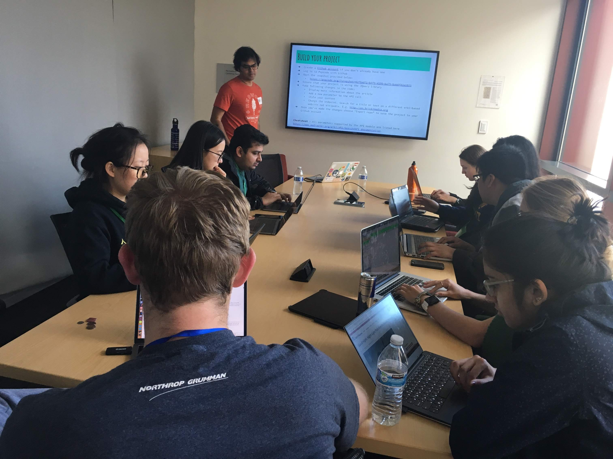
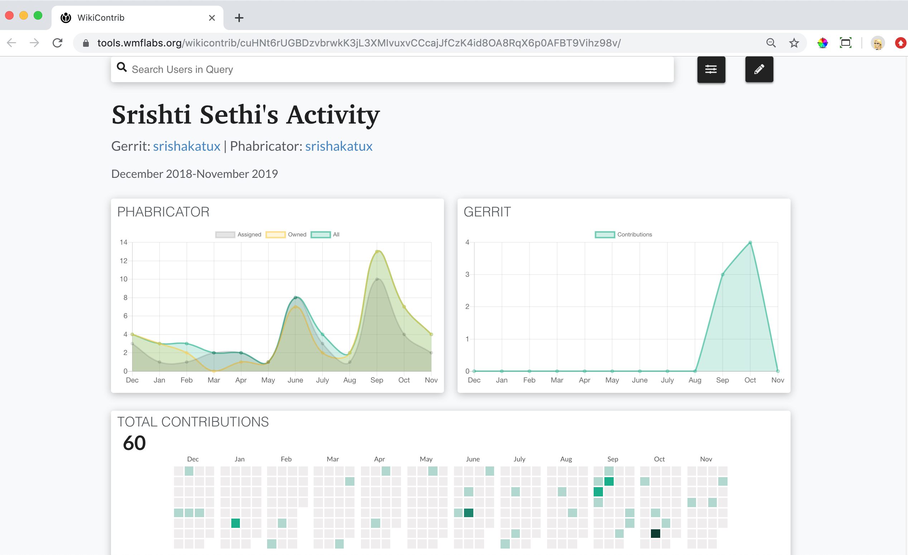

Wikimedia work (2016–Present)
In my role as a Senior Developer Advocate at the Wikimedia Foundation, I contribute to the organization’s efforts to engage volunteer developers in Wikimedia projects and to grow the technical community.
Contents
- 1Mentoring and Outreach
- 2Development
- 2.1Tools
- 2.2Sample Code
- 2.3Resources
- 3Research

Virtual party organized for Outreachy Round 21 interns

Asian Wikimedians meetup at Wikimania 2018, Cape Town
Mentoring and Outreach
Programs
- Recruit mentors, curate beginner-friendly projects, and promote them to prospective candidates through various channels.
- Provide a group communication tool to interns and mentors and answer their queries.
- Facilitate project selection and evaluation process with mentors.
- Develop strategies for engaging interns before, during and after the program. For example, conduct an online information session for prospective candidates and showcase on completed projects.
- Collect changes for improvements throughout the program, document lessons learned, and revise the resources on the Outreach Programs hub.
Events

A mentoring program session at the Wikimedia Hackathon 2018, Barcelona
Wikipedia API workshop at Stanford University's Treehacks 2019, Palo Alto

Newcomers setting up MediaWiki development environment at Wikimedia Hackathon 2017, Vienna
.jpg)
Wikimedia crew at ChickTech workshop 2017, San Francisco
Development
Tools
Code samples
Resources
Screenshot of Toolhub's home page
Screenshot of a users' contributions generated by the WikiContrib tool

Project Showcase at Wikimedia Hackathon 2019, Prague
Research

Group photo of the Wikimedia Summit 2019, Berlin
Copyright © SrishAkaTux 2022